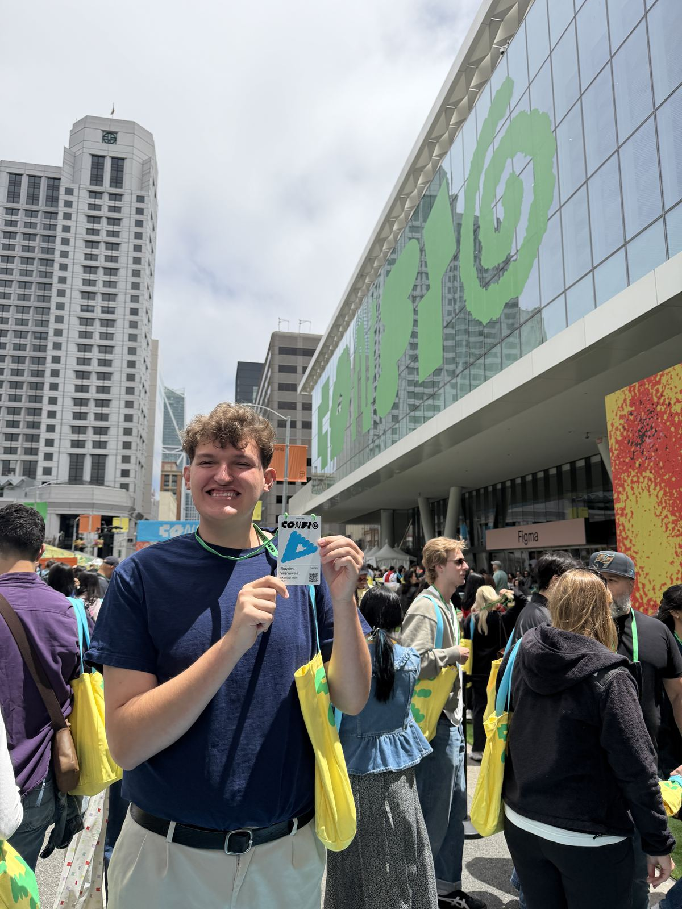
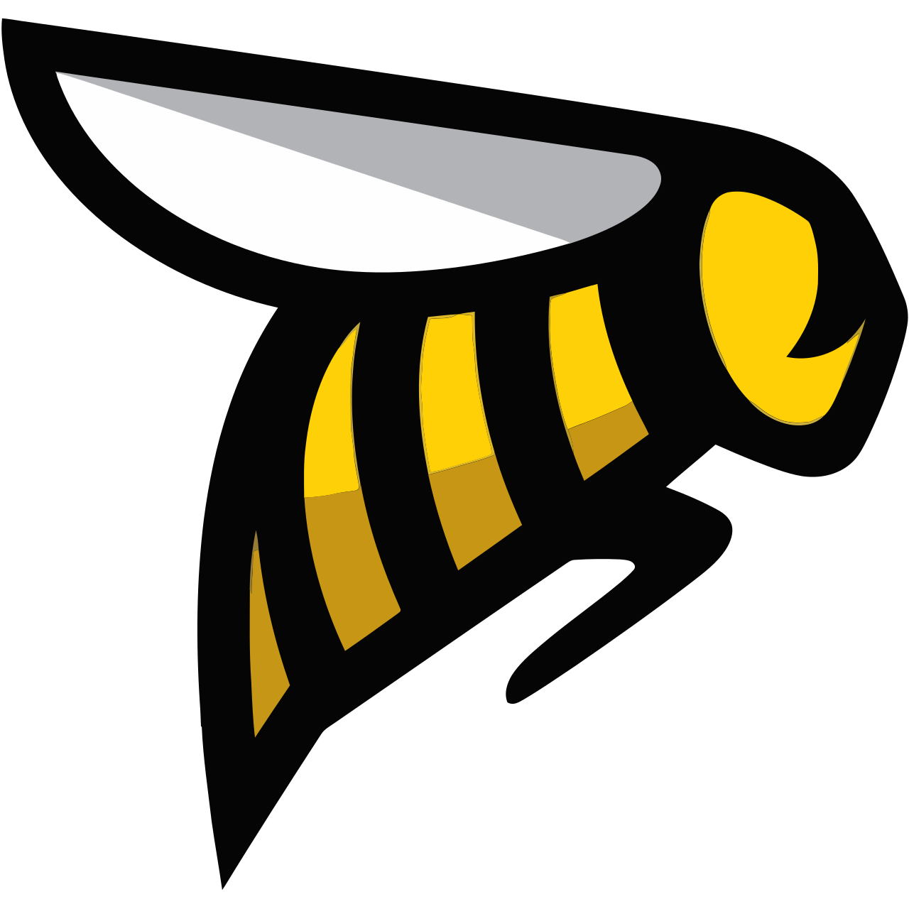
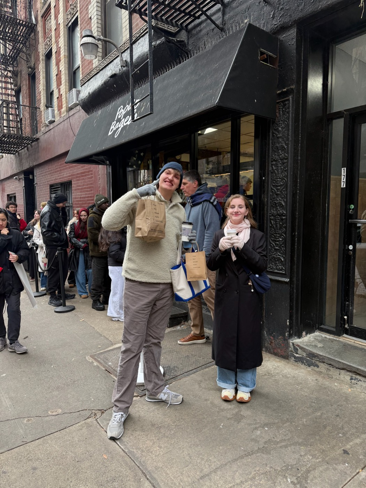
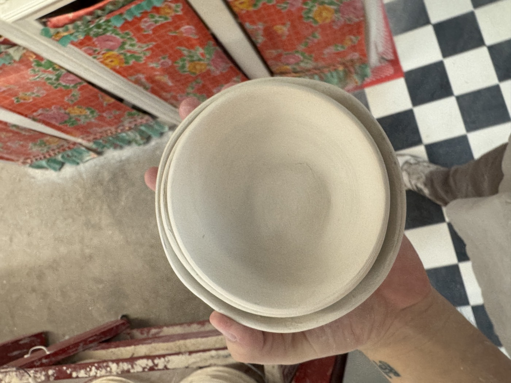
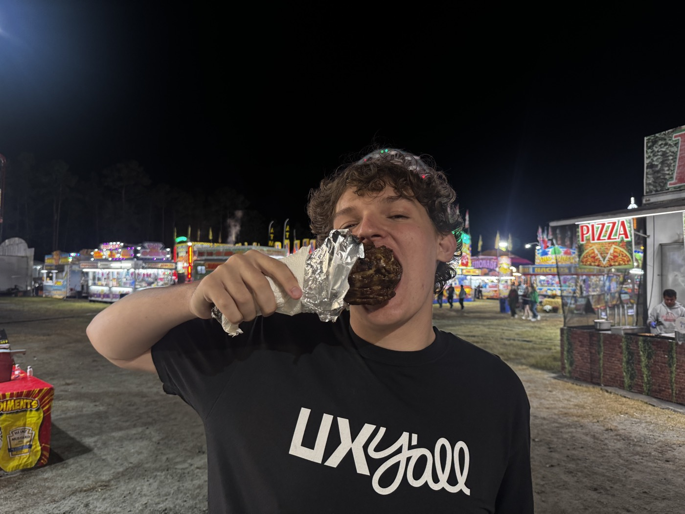

A little more about me.
I’m a product designer finishing my BFA in User Experience Design at
SCAD 
I enjoy the complexity of B2B and the everyday impact of B2C, especially when there’s a messy problem to make a little simpler.
I’m most curious about where people and emerging technology meet, and how we can turn new technology into something people actually want to use.
But design is only part of it.
going somewhere new, making things away from a screen, finding really good food, and spending time with good people.



Anyway, that’s me.
There’s more to the story, but it’s probably better over coffee.
Say hi